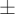
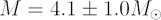
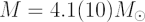
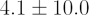
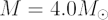
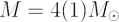
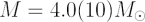
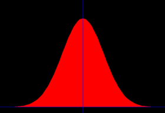

In astronomy almost every quantity we observe has an associated error often
expressed as a

quantity after the value, ie:
suggests that our best estimate of the mass  is 4.1 M but that
is 4.1 M but that
it could easily be 1.0 M more or less than that.
Sometimes astronomers choose to drop the and just put the error in the last digit in parentheses (brackets). So in the example above this would be somewhat confusingly written as:

Novices sometimes think this means

– it does not!More awkwardly, if the best estimate was

then we could have written:
which is equivalent to

!Normal or Gaussian Distributions

In nature when we make a series of measurements they
often follow a Gaussian or Normal distribution like that shown above.
often follow a Gaussian or Normal distribution like that shown above.
What does this really mean? Well, astronomers usually set the error to mean there is a 67% chance that the true value falls within one listed error of the value. If the measurements are distributed “normally”, ie in a Gaussian fashion, then there is about a 96% chance the value is within twice the listed error and a >99% chance it is within three times the error. The error is often referred to as “sigma”. So a 1-sigma result is quite poor, whereas a 3-sigma result reasonably secure. The sigma comes from the standard deviation of a Gaussian distribution.